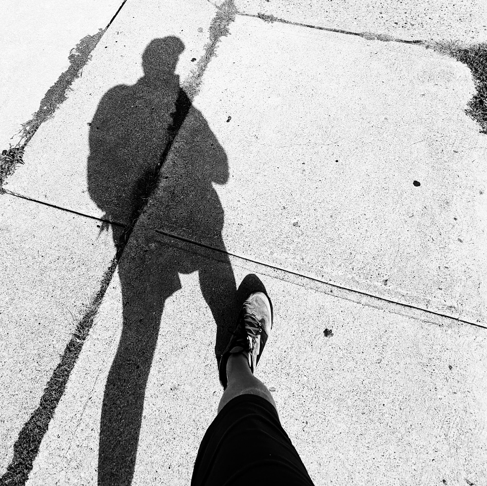
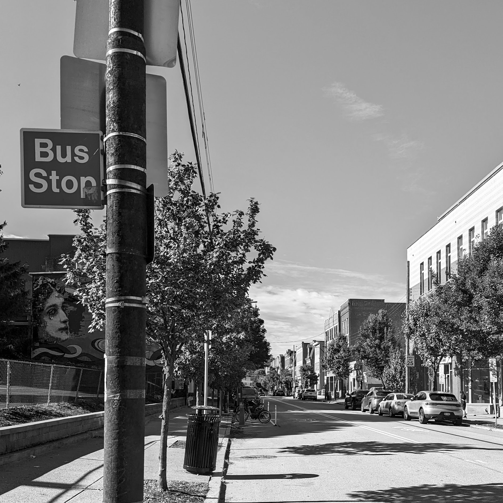

The Walk

September 24, 2022
It's is a cool and sunny Saturday morning.
I don't really feel like walking, but I REALLY don't feel like sitting inside the house for another day.
In a futile attempt at slowing my innevitable devolution into some freakish work-from-home troll. I venture out into the city streets.
The car is parked beneath the watchful gaze of St Augustine
I parked here by the church next to my office, no good reason, just force of habit.
It's roughly 3 miles to downtown from this part of Lawrenceville. As good a destination as any.
